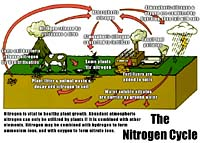

|
|
|
| The cycling of soil nutrients is essential to maintaining long term fertility
and sustainable agriculture.
The most well known of these cycles is the nitrogen cycle. Think about it. Nitrogen is a very mobile
nutrient that moves easily through the soil as the NO3- anion. Losses through
leaching,erosion, crop removal, denitrification and volatilization would deplete this essential nutrient rapidly
if it were not continually replaced. We are using the same nitrogen over and over again in a
cycle that has existed since life first appeared on the planet.
All nutrients undergo cycling. but it is the ones that cycle through the organic matter nitrogen, sulphur and phosphorus that have undergone the most study. |
|||
 Nitrogen Cycle The nitrogen cycle is perhaps the most studied cycle of all. The soil is the most important reservoir of terrestrial nitrogen. Saskatchewan soil vary widely in nitrogen content from less than 0.1 % in heavily cultivated brown and gray soils to over 1.0% nitrogen in thick black virgin soils. The carbon:nitrogen ratio of varies from about 8:1 in the brown to over 12:1 in the grey soils with an average of about 10:1. If nitrogen costs 40 cents a pound as a fertilizer, what is the N worth in an acre furrow slice of soil with 0.5% N, if were all to become available for plant uptake? Hint: an acre of soil to a depth of 15cm with a bulk density of 1.2 has a mass of about 2 million lbs. The ultimate source of nitrogen for plant growth is dinitrogen gas N2 in the atmosphere which is about 78% N. The air over one hectare of land contains about 300,000 tonnes of N compared to only 10-20 tonnes N in the soil. Most soil nitrogen is tied up with soil organic matter as organic molecules. Some of these molecules cycle rapidly others are quite inert. We have the concept therefore of the active and passive fractions of soil organic matter. The active fraction cycling at about 10 to 25 years and the passive cycle hundreds to thousands of years. Only 1-5% of soil organic N becomes available for crops during a single growing season. The process of summerfallowing and tilling greatly accelerates N release and we can then be criticized as mining the soil for nitrogen. In studying the N cycle, start with the soil solution N. The ultimate form of solution N in fertile aerobic soils is nitrate NO3- but small amounts of ammonium NH4+ ions can often be found as an intermediary product of mineralization or fertilization. The nitrate in solution is the immediate supply of plant available nitrogen and changes according to a balance between gains and losses: Gains of solution N:
Losses of Solution N:
Additions to the soil system:
Losses to the soil system:
In understanding the nitrogen cycle do not forget that it is dynamic. Each of the smaller cycles moves along at its own rate. But If we disturb one of the smaller cycles the whole system will be affected. What do you think would happen if we changed our system from growing wheat crops to permanent pasture to support grazing animals? Sulphur Cycle This cycle has many similarities to the nitrogen cycle since it has an important atmospheric component and is absorbed along with nitrogen by soil plants and animals. Soil organic matter is an important storage container for sulphur and is the main source in most soils except those contaminated by salinity or with saline parent materials. In areas around industrial centres significant amounts of S can be added to the soil as acid rain. Acid rain occurs as a result of industrial pollution which emits S gases such as SO2. These gases dissolve in rainwater as sulphuric and sulphurous acids which falls onto the soil surface. In Saskatchewan, S in rainfall amounts to only 5-10 kg/ha per year. In most Saskatchewan soils, total S in soils amounts to only 0.05% or about 10 times less than N. More than 90% of the S is in organic combination which must first be mineralized to the SO42- anion before it can be taken up by plants. The rate of mineralization, like nitrogen is affected by soil chemical and physical conditions. A well aerated soil that is warm and has a near neutral pH with abundant supply of other nutrients will favour the growth of mineralization organisms. A reverse situation occurs when we add to soil a crop residue such as straw which has a low sulphur content.In order to use the carbon contained in the straw, heterotrophic soil microbes must take some of the soil available sulphur supply to build proteins causing immobilization - a situation that can temporarily deprive plants of sulphur. In waterlogged or flooded soils, some odorous sulphur gases are produced by reduction of sulphate or breakdown of amino acids. Compounds such as mercaptans and hydrogen sulphide (rotten egg smell) form which escape into the atmosphere. Deficiencies in available sulphur can be remedied quickly by adding mixed fertilizers such and ammonium sulphate (21-0-0-24) or salts such as calcium sulphate (gypsum). Elemental S can be used, but it is not immediately available. The sulphur must be applied in a very finely divided form (10 to 100 µm) so that soil organisms can oxidize it to the plant available SO42- form during the growing season. Since powdered elemental sulphur is explosive and hard to handle, farmers much prefer to use sulphate salts as fertilizers. Phosphorus Cycle Next to nitrogen, phosphorus is most important fertilizer nutrient. Most soils through the world will eventually need phosphorus additions from fertilizers to maintain economic crop production. This nutrients is also causing devastating effects on watersheds. Over the years, farmers have applied huge quantities of this nutrient so that many soils have a large storage of P. Because the nutrient is strongly adsorbed by soil and rapidly converted to slowly available forms, farmers continue apply fertilizer P to get rapid growth responses. Unfortunately, only about 10-20% of the applied P is available to the crop. The rest of the fertilizer P is converted by the soil to insoluble compounds. As a result of erosion, much of the soil P finds its way into rivers, lakes and oceans greatly upsetting the nutrient balance. The excess P promotes the growth of algae and water plants which rob the water of oxygen causing organisms such as fish to die. This process is called eutrophication. Soil phosphorus is roughly evenly divided between organic and inorganic forms. Compared to nitrogen, soils have about ten times less phosphorus or a N:P ratio of 10:1. The best way to understand the P cycle, like nitrogen, is to use the soil solution P as the centre of the cycle. Unlike the other macronutrients, P in solution is very low typically less than 0.1 mg/l. The dominant ions are orthophosphate which at neutral pH is about 50% HPO42- and H2PO4-. Both these ions can be taken up by plants. The P in solution is rapidly depleted around plant roots and is only slowly replaced by the diffusion process of ion movement. In this situation the micorrhizae fungi associated with plant roots greatly aid in acquiring phosphorus by sending out hyphae to all parts of the soil. When we add fertilizer to the soil, the soil solution P is temporarily increased with orthophosphate ions but they are rapidly converted to insoluble forms. The dominant forms of inorganic P depend on other cations present and the pH. Organic P is mineralized in soils by microorganisms but the mineralized P is rapidly fixed by the inorganic fraction if not immediately taken up by plants. Very little P is added to soils from natural sources. As we cultivate a soil, phosphorus is removed in the crop leading to a slow decline in soil P which must be replaced by fertilizers. |